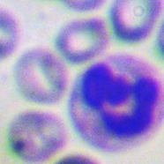

<!--
  Generated template for the MalariaTestPage page.

  See http://ionicframework.com/docs/components/#navigation for more info on
  Ionic pages and navigation.
-->
<ion-header>
  <ion-navbar>
    <button ion-button menuToggle right>
      <ion-icon name="menu"></ion-icon>
    </button>
    <ion-title>Malaria Test</ion-title>
  </ion-navbar>
</ion-header>


<ion-content padding>
  <div class="results">
    <ion-item-group>
      <ion-item-divider><span class="name">Results</span><span class="val">Malaria Positive</span></ion-item-divider>
      <ion-item-divider><span class="name">Type</span><span class="val">P.Vivax</span></ion-item-divider>
      <ion-item><span class="name">Para</span><span class="val">3%</span></ion-item>
    </ion-item-group>
  </div>
  <div class="suspected">

      <div class="toolbar-title-md ">
        Suspected
      </div>
    <div class="sus-container">
      
      <p>
        Possible coinfection with PF
      </p>
    </div>

  </div>

  <div class="expert-advice">

    <div class="toolbar-title-md ">
      Expert Advice
      <span>
        <ion-icon name="phone-portrait"></ion-icon>
      <i></i>
      <ion-icon name="mail"></ion-icon>
      </span>

    </div>
  </div>

</ion-content>
